Бірінші
тәсіл ақпараттың материалдық тасушысын жаудан физикалық қорғау. Мәліметтерді тасушы ретінде қағаз, компьютерлік тасушы (DVD-диск,
флэш-карта, магнитті диск, қатқыл диск және т.б.) болу мүмкін. Осы тәсілді
жүзеге асыру үшін сенімді байланыс арнасы қажет. Бұрыңғы заманда ол үшін пошта
көгершіндері, арнайы курьерлер, құпиялы жиілікте радиохабарлар пайдаланылатын.
Ақпараттың физикалық қорғау әдістері қәзіргі мәліметтерді өңдеу
автоматтандырылған жүйелерде де пайдалынады. Мысалы, ақпаратты қорғау құрама
жүйелерге қоршау жүйелер мен физикалық оқшаулау кіреді және күзет жүйелері.
Ақпаратты
қорғаудың бұрыннан белгілі екінші тәсілі – стеганографиялық қорғау. Бұл қорғаудың негізінде қарсыласқа керекті ақпаратты жасыру әрекеті.
Стеганографиялық қорғау әдісте жаудан мәліметтердің физикалық тасушысын
жасырады немесе құпиялы хабарды құпиялы емес, ашық ақпараттын арасында
бүркейді. Осындай тәсілдерге жатады, мысалы, құпиялы ақпараты бар
микрофотоларды құпиясыз жерде «тығу»: пошта конвертінің маркасының астында,
кітаптың тыс астында және т.б.
Ақпаратты
қорғаудың үшінші тәсілі – ең берікті және
қәзіргі уақытта кеңінен таралған – криптографиялық. Бұл әдісте жаудан
(қаскүнемнен) ақпараттың мағынасын жасыру үшін оны түрлендіру қажет.
Криптография грек тілінен «құпия жазу» деп аударылады. Қазір криптография
ақпаратты түрлендірудің математикалық әдістерін іздеп зерттейді.
Криптоталдау криптографиямен қатар дамиды және
жетілдіріледі– бұл ақпараттың криптографиялық қорғауын жеңіп өту туралы ғылым.
Криптоталдаушылар кілттерді білмей ақпараттың шифрын ашу мүмкінідігін
зерттейді. Табысты өткізілген криптоталдау шифрлау кілтті, немесе ашық мәтінді,
немесе екеуінде бірге алуға мүмкіндік береді. Кейде криптографиямен
криптоталдауды бір ғылымға біріктіреді – криптология (kryptos - құпиялы, logos
- ғылым). Оның негізгі міндеттері – рұқсатсыз қатынаудан ақпаратты қорғау үшін
ақпаратты қайтымды түрлендіру сұрақтары, шифрлау жүйелердің сенімділігін
бағалау және шифрдың беріктігін талдау.
Қолданылатын салалары
Ашық байланыс арна арқылы берген кезде
деректерді шифрлау (мысалы, Интернетте сатып алу кезіндегі мекен жайы, телефон,
кредит картанын нөмірі сияқты мағлұматтар шифрланады);
Желі ішінде пайдаланушылардың парольдерін
сақтау және өңдеу; алысталған байланыс арна арқылы бухгалтерлік есептерді
өткізу; жергілікті және ғаламдық желі арқылы кәсіпорындарға банктік қызмет ету;
Банк пластикалық карточкаларға қызмет көрсету;
Рұқсат етілмеген қатынаудан деректерді
компьютердің қатқыл дискісінде (мысалы, Windows операциялық жүйеде арнайы
термин бар – файлдық шифрланған жүйе EFS) қауіпсіз сақтау.
Негізгі терминдер
Шифр – бастапқы құпиялы хабарды қорғау үшін оның алдын ала айтылған
түрлендіру тәсілдерінің жиынтығы.
Бастапқы хабарлар әдетте ашық мәтін деп
аталады. Шетел әдебиетте ашық мәтін үшін пайдаланады термин plaintext.
Символ – кез келген белгі, соның ішінде әріп, цифр немесе тыныс белгілері.
Әліпби
(алфавит) – ақпаратты кодпен жазу (кодтау) үшін
пайдаланылатың символдардың шектілік көптігі.
Мысалы, орыс әліпбиі А-дан Я-ға дейін 33
әріптен тұрады. Бірақ, бұл отыз үш белгі хабарды жазу үшін жеткіліксіз,
сондықтан оны тақыр, нүкте, үтір және басқа символдармен толтырады. Араб
цифрлердің әліпбиі – бұл 0, 1, 2, 3, 4, 5, 6, 7, 8, 9 символдар. Бұл алфавитте
10 белгі бар және оның көмегімен кез келген натурал санды жазуға болады. Кез
келген хабар екілік әліпби көмегімен де жазылу мүмкін, яғни тек ноль мен бірді
пайдалана отырып.
Кілт – хабарларды шифрлау мен дешифрлау үшін
қажетті ақпарат.
Шифрді ашу және дешифрлау терминдері бір біріне синоним, бірақ әдетте екінші термин көбінесе қаскүнем (яғни кілтті
білмейтін адам) үшін пайдаланады.
Шифрлау жүйесі немесе шифр жүйесі –
бұл хабар мәтінің қайтымды өзгерту үшін (жолданған адамнан басқа барлықтарға
мәтін түсініксіз болсын оймен) пайдаланатын кез келген жүйе.
Кілтті білмегенде шифрды ашуға беріктікті анықтайтын шифр сипаттамасы
(яғни криптоталдауға қарсы тұру қабілеті) криптоберіктік деп аталады.
Сонымен, берілген анықтамаларды еске ала отырып, «криптография»
ғылымының дәл анықтамасын берейік.
Криптография шифрлау жүйелерінің құруы мен пайдалануын зерттейді, соның ішінде олардың беріктігін, осал жерін және ашу
әдістер жөнінде осалдық дәрежесін. Рұқсатсыз қатынаудан қорғау үшін ақпаратты түрлендірудің барлық
әдістері екі үлкен топқа бөлінеді: жабық
кілті бар шифрлау әдісі және ашық кілті бар шифрлау әдісі.
Жабық кілті бар шифрлауды (құпиялы кілті бар шифрлау немесе симметриялық шифрлану) адам бұрыннан
пайдаланып келе жатыр. Бұл әдісте деректерді шифрлау және дешифрлау үшін бір
кілт ғана пайдаланады, оны екі жағы да жаудан жасырып сақтайды.
Ашық кілті бар шифрлаудың (ассимметриялық шифрлау) пайдаланауы ХХ ғасырдың екінші жартысында ғана
басталды. Бұл топқа жатады деректерді шифрлау және дешифрлау үшін екі әртүрлі
кілтті пайдаланатың шифрлау әдістері. Мұнда кілттердің біреуі (ашық кілт) ашық
(қорғалмаған) арна арқылы берілу мүмкін.
Электронды (цифрлық) қол (қолтаңба) бұл әдетте хабарға қосылатың, криптографиялық түрлендіру көмегімен алынған,
деректер блогы.
Мәтінді алған кезде электронды қол хабардың авторлығы мен нақтылығын
тексеруге мүмкіндік береді.
Ақпаратты қорғаудың криптографиялық жүйесі –
бұл деректерді шифрлау үшін криптографиялық әдістерді пайдаланатын ақпаратты
қорғау жүйесі.
Криптографиялық шабуылдар
Сақтау, беру және түрлендіру барысында ақпарат
әртүрлі шабуылға душар болады. Шабуылды
қарсыластар (жаулар, қаскүнемдер және т.б.) жүзеге асырады. Қауіпсіздіктін
негізгі бұзулары: ақпараттық құндылықты ашу (конфиденциалдықты жоғалту),
автордан рұқсатсыз модификациялау (тұтастықты жоғалту) немесе осы құндылықтарға
авторлықсыз қол жетерлікті жоғалту (қол жетімділікті жоғалту).
Шабуылдар
пассивті (дәртсіз) және белсенді болу мүмкін. Егер қарсыластар берілетін
хабарларды өзгерте алмаса, онда осындай шабуылды пассивті деп атайды. Пассивті
шабуыл кезінде берілетін хабарларды тек тыңдауға, дешифрлауға және трафикті
талдауға болады. Белсенді шабуылда қарсылас берілген хабарды өзгерте алады және
өзінің хабарларын да қосу мүмкін.
Түрлі
шифрдың криптоталдауы хабар мәтінің ерекшелерін еске алмай мүмкін емес.
Криптоталдауда қолданатын мәтіннің ең қарапайым сипаттамалары мұндай:
әріптердің, қос әріптердің (биграмма) және жалпы n-граммалардың
қайталанғыштығы, дауысты және дауыссыз
дыбыстардың кезектесi және
кейбір басқалар. Осындай сипаттамалар жеткілікті ұзын мәтіндерді байқаған кезде
зерттеледі. Криптографиялық
шабуылдарды қарсыластың криптоталдауы үшін жетімді ақпараттың саны және типі
бойынша жіктеуге болады. осы жіктеу бойынша келесі шабуыл түрлерін ажыратады.
Шифрлама (шифрланған мәтін) негізіндегі шабуыл – қарсыластың қолында талдау үшін бір кілтпен
шифрланған әртүрлі белгісіз ашық мәтіндердің шифрламасы болғанда.
Криптоталдаушының міндеті көбірек хабарлардың ашық мәтіндерін немесе шифрлау
кезіндегі пайдаланған кілтті алу. Алынған кілт кейін басқа хабарларды
дешифрлауға пайдаланады.
Белгілі
ашық мәтін негізіндегі шабуыл – криптоталдаушының қолына бұрын берілген шифрланған хабарларға сәйкес қандай да
болса ашық мәтіндер түссе. «Мәтін- шифрлама» қостарды салыстырып, қарсылас
құпиялы кілтті білуге тырысады, сосын оның көмегімен келесі барлық хабарларды
ашу үшін.
Таңдап алынған ашық мәтін негізіндегі шабуыл –
бұл жағдайда криптоталдаушы оған берілген «мәтін-шифрлама» қостардан басқа, өзі
де керек мәтіндерді жасай алады және білгісі келген кілт көмегімен оларды
шифрлай алады.
Классикалық, немесе
біркілтті криптография шифрлаудың симметриялық алгоритмдерінің пайдалануына
сүйенеді. Бұл алгоритмдер бір ғана құпиялы элемент (кілт) пайдаланады, ал
шифрды ашу шифрлаудың жай айналуы болып табылады. Сондықтан, әдетте алмасудың
қатысушылары хабарды шифрлау мен дешифрлай алады. Осындай жүйенің схемалық
құрылымы суретте көрсетілген.
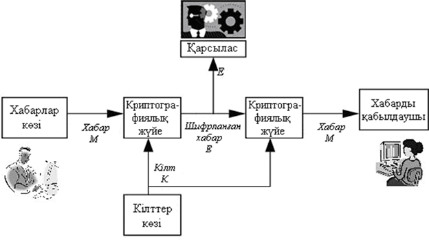
Беретін жақта хабардың көзі мен кілттер көзі
бар. Кілттер көзі осы жүйенің барлық мүмкін болатын кілттерінен нақты кілтті К таңдайды. Бұл кілт К кейбір тәсіл көмегімен қабылдау жаққа беріледі, кілт басқа
қолға түспеу үшін арнайы курьермен жеткізіледі (сондықтан, симметриялық шифрлау
жабық кілті бар шифрлау да деп аталады). Хабарлар көзі кейбір хабарды М жасайды, сосын бұл хабар таңдалған кілт көмегімен шифрланады. Шифрлау
нәтижесінде шифрланған хабар Е (криптограмма деп аталатын) алынады. Сосын криптограмма Е байланыс арна арқылы
жіберіледі. Байланыс арна ашық және қорғалмаған болғандықтан, мысалы радио арна
немесе компьютерлік желі, онда берілетін хабарды қарсылас қолына ұстап түсіру
мүмкін. Қабылдау жақта Е криптограмманы кілт көмегімен ашады және бастапқы М хабарды алады.
Егер М – хабар, К - кілт, Е - шифрланған
хабар, онда жазуға болады: E = f(M,K),
яғни шифрланған хабар Е бастапқы хабар М мен
кілттің К кейбір функциясы болып табылады. Криптографиялық жүйеде пайдаланатын
әдіс немесе шифрлау алгоритмы f функцияны анықтайды.
Жабық кілті бар шифрлаудың әртүрлі әдістері
белігілі (сур. 7.2). Тәжірибеде жиі қолданады орын ауыстыру, орнына қою
(ауыстыру) алгоритмдер және құрамды әдістер.
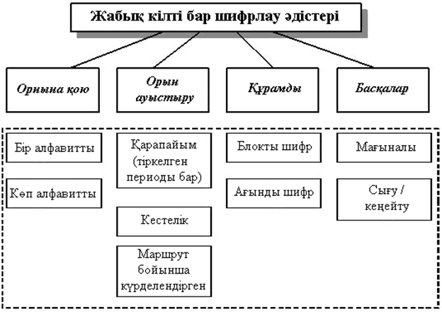
Орнына қою әдісі
Орнына
қою
(ауыстыру)
шифрлау
әдістері
былай
негізделеді:
әдетте
блоктарға
бөлінген
және
бір
алфавитта
жазылған
бастапқы
мәтіннің
символдары
басқа
әліппенің
бір
не бірнеше
символдары
мен, қабылданған
түрлендіру
ережеге
сәйкес,
ауыстырылады.
Біралфавитты
орнына
қою орнына
қою
әдістерінің
бағыныңқы
класстарының
маңызды
біреуі
біралфавитты
(немесе
моноалфавитты)
орнына
қоюлар,
мұнда
А хабардың
бастапқы
алфавитінің
әрбір
ai
белгінің
және
шифрланаған
E
мәтіннің
сәйкес
ei
белгінің
арасында
бірмәнді
сәйкестік
орындалады.
Біралфавитты
орнына
қою
кейде
қарапайым
орнына
қою
деп
аталады,
себебі
бұл
ең
қарапайым
шифр.
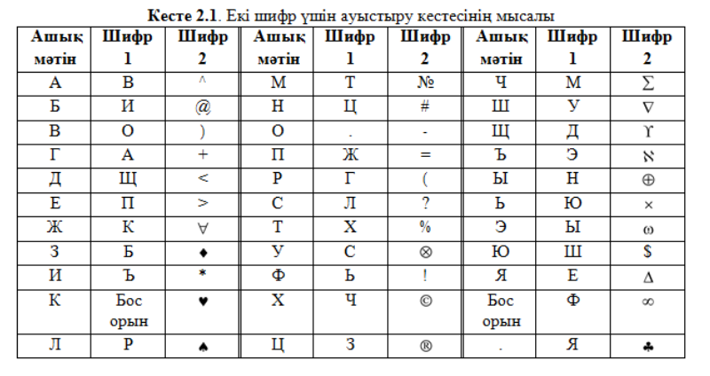
Шифрлау үлгісі
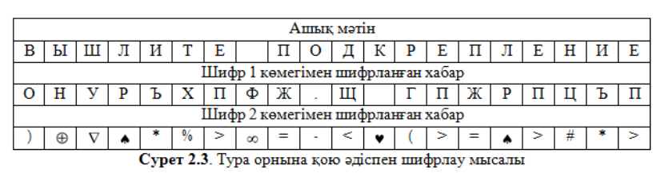
Пропорционал шифрлау
Біралфавитты орнына қою әдістеріне пропорционал немесе монофониялық шифрлар жатады, оларда жиілік талдау
көмегімен ашудан қорғау үшін шифрланған белгілердің кездесу жиілігі
теңестіріледі. Жиі кездесетін белгілер үшін мүмкін болатын баламалар пайдаланады.
Аса көп пайдаланбайтың бастапқы белгілер үшін бір не екі балама жеткілікті.
Шифрлау кезінде ашық мәтіннің символы үшін орнына қою кездейсоқ немесе белгілі түрде
(мысалы, рет-ретімен) таңдалады. Символдарды ауыстыру үшін пропорционал шифрды
пайдалану кезінде әдетте сандар таңдап алынады.
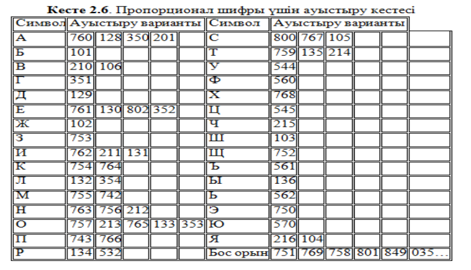
Бұл жағдайда хабар келесі
түрде шифрлану мүмкін: БОЛЬШОЙ СЕКРЕТ 101757132562103213762751800761754134130759
Берілген мысалда қайталанатын әріптер үшін (мысалы, «О») ауыстыру варианттары рет-ретімен
таңдалды.Пропорционал шифрлар
қарапайым біралфавитты орнына қою шифрларға
қарағанда ашу үшін күрделірек. Бірақ, «ашық мәтін – шифрланған мәтін» бір жұбы
ғана бар болса, ашуы қиын емес. Егер де
тек шифрланған мәтіндер қолда болса, онда кілтті ашу, яғни ауыстыру кестесін
табу, күрделі болса да, бірақ сонда да жүзеге асырылу мүмкін.
DES шифрлау алгоритмі
Негізгі
мәліметтерЖабық
кілті бар криптографиялық жүйелердің ең танымалы DES – Data Encryption
Standard. Бұл жүйе деректерді шифрлау облыста
мемлекеттік стандарт статусты ең бірінші алған болатын. Оны ойлап жасаған IBM
фирманың мамандары және АҚШ-а іске қосылды 1977 жылы. DES алгоритмы деректерді
сақтағанда және түрлі есептеуіш жүйелер арасында деректерді беру кезінде;
пошталық жүйелерде; электронды сызбалар жүйелерде және коммерциялық ақпаратпен
электронды алмасу кезінде кең пайдаланатын. DES стандарты бағдарламалық та
аппараттық та жүзеге асырылатын.
Соңғы уақытта бұл жүйеде мемлекеттік стандарт
статусы болмасада, ол бұрынғыдай кең қолданылады және жабық кілті бар блокты
шифрларды оқып үйренгенде бұл алгоритмға назар аудару жөн.
DES алгоритмда кілт ұзындығы 56 бит. Дәл
осыған байланысты негізгі проблема - DES әртүрлі шабуылдарға шыдай алама?
Қандай да болса блокты шифрды бұзуға болады, егер барлық мүмкін болатын кілттер
комбинациясын іріктеп алатын болсақ. Кілт ұзындығы 56 бит болғанда мүмкін
болатын түрлі кілттердің саны 256. Егер компьютер бір секундта 1000000 кілтті
(220 жуық) іріктеп алса, онда барлық 256 кілтті ірктеп алу үшін 236 секунд
қажет болады немесе екі мың жылдай.
Бірақ, дербес компьютерден жылдам және қымбат
есептеуіш жүйелерді де пайдалануға болады. Мысалы, егер параллель есептеуді
жүргізу үшін миллион процессорды біріктіретің болсақ, онда кілтті іріктеп алу
үшін 18 сағат ғана қажет. Сондықтан, криптоталдаушының қолында осындай қымбат
техника болса, DES пен шифрланған деректерді жеткілікті уақытта ашып оқуға қиын
емес.
Сонымен, DES жүйесін аса үлкен емес және аса
бағалы емес қосымшаларда деректерді шифрлау үшін пайдалануға болады.
Мемлекеттік маңыздылығы бар немесе үлкен коммерциялық бағасы бар деректерді
шифрлау үшін DES жүйесі қазір пайдаланбайды. 2001 жылы АҚШ-та блокты шифрдың
жаңа стандарты қабылданды, ол AES (Advanced Encryption Standard) деп аталады.
Оның негізінде бельгия мамандары жасаған Rijndael шифры жатыр.
DES-ң негізгі параметрі: блок өлшемі 64 бит,
кілт ұзындығы 56 бит, раунд саны –16. DES бұл екі бұтағы бар классикалық
Фейштель желісі. Алгоритм бірнеше раундта деректердің 64-битты кіру блогын
64-битты шығу блокка түрлендіреді. DES стандарты орын ауыстыруды, алмастыруды
және гаммалауды араластырып пайдаланады. Шифрланатын деректер екілік түрде болу
керек.
Шифрлау DES-ң жалпы құрылымы суреттерде көрсетілген.
Бастапқы мәліметтердің әрбір 64- битты блоктын шифрлау процесін үш кезеңге
бөлуге болады:
1. деректер блогын дайындау;
2. «негізгі циклдың» 16 раунды;
3. деректер блогының соңғы өңдеуі.
Бірінші
кезеңде бастапқы мәтіннің 64-битты блогының бастапқы орын ауыстыруы орындалады,
сол кезде биттер белгілі түрде қайтала реттеледі.
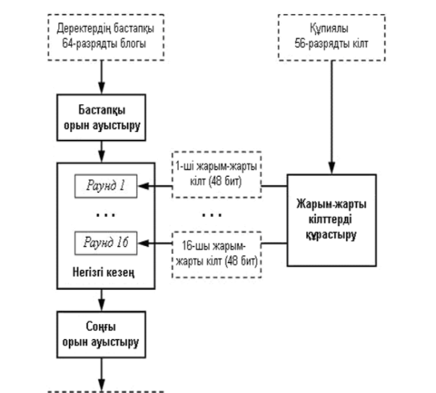
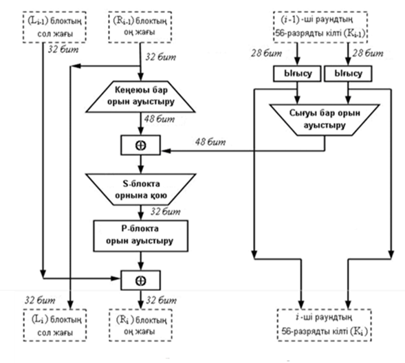
DES алгоритмі қалай жұмыс жасайды
DES блок негізіндегі шифрлау алгоритмі болып табылады, яғни кіріс және шығыс деректерінің ұзындығы 64 бит. Басқаша айтқанда, DES максимум 264 түрлендіру әдісін шығарады. Әрбір 64 биттік блок екі 32 биттік бөлімге бөлінген: сол жақ жарты L және оң жарты R. (Бұл сегменттеу тек белгілі бір операцияларда орындалады.)
Мысалы, ашық мәтінді M ретінде алыңыз
M=0123456789ABCDEF
Мұнда M - он алтылық, M екілік жүйеде жазып, біз 64 биттік блок аламыз:
M = 0000 0001 0010 0011 0100 0101 0110 0111 1000 1001 1010 1011 1100 1101 1110 1111 L = 0000 0001 0010 0011 0100 0101 0110 0111 R = 1000 1001 1010 1011 1100 1101 1110 1111
М-ның бірінші цифры 0, соңғы цифры 1. Солдан оңға қарай оқимыз.
DES осы 64 биттік блокты басқару үшін 56 биттік кілтті пайдаланады. Құпия кілт іс жүзінде 64 бит ретінде сақталады, бірақ әрбір 8 бит пайдаланылмайды (яғни, алғашқы 8, 16, 24, 32, 40, 48, 56 және 64 бит пайдаланылмайды). Дегенмен, біз келесі операцияда кілтті 1-ден 64 битке дейін 64 бит деп белгілейміз. Дегенмен, ішкі бөлім жасалған кезде аталған 8 ескерілмейтінін көруге болады.
Мысалы, K он алтылық пернесін алайық
K = 133457799BBCDFF1 Біз оның екілік түрін аламыз (1 - 0001, 3 - 0011. Және т.б. және әрбір сегіз бит топқа жазылады. Осылайша, әр топтың соңғы биті пайдаланылмайды.)
K = 00010011 00110100 01010111 01111001 10011011 10111100 11011111 11110001
1-қадам: Әрбір ұзындығы 48 бит болатын 16 бөлімше жасаңыз
Бұл 64-биттік кілт алдымен PC-1 кестесіне сәйкес түрлендіріледі
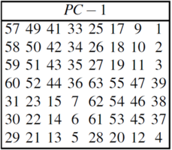
Кестедегі бірінші элемент 57 болғандықтан, бастапқы кілттің 57-ші биті жаңа K+ кілтінің 1-ші битіне өзгереді. Сол сияқты, бастапқы кілттің 49-шы биті жаңа кілттің 2-ші битіне түрленеді ... бастапқы кілттің 4-ші биті жаңа кілттің соңғы битіне түрлендіріледі. Жаңа кілтке бастапқы кілттің 56 биті ғана енетінін ескеріңіз, ал жоғарыдағы кестеде барлығы 56 жазба бар.
Мысалы, бастапқы килт үшін: K = 00010011 00110100 01010111 01111001 10011011 10111100 11011111 11110001 Біз жаңа 56 биттік кілт аламыз: K+ = 1111000 0110011 0010101 0101111 0101010 1011001 1001111 0001111
Содан кейін бұл кілтті сол және оң жақ бөліктерге бөліңіз, C0 және D0, әрбір жартысы 28 цифрдан тұрады.
C0 және D0 бірдей анықтамасы үшін енді біз 16 блокты жасаймыз Cn және Dn, 1<=n<=16, Әрбір Cn және Dn жұбы Алдыңғы Cn-1 және Dn-1 жұбының үстінен осында өтіңіз Нақтырақ айтқанда, n үшін = 1, 2, …, 16 Алдыңғы ауысымның нәтижесінде солға жылжытудың кейбір операцияларын орындау үшін келесі кестені пайдаланыңыз. Солға жылжу дегеніміз не? Солға жылжыту біріншіден басқа барлық биттерді солға жылжытуды және біріншісін соңғысына жылжытуды білдіреді.
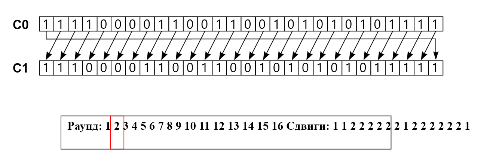
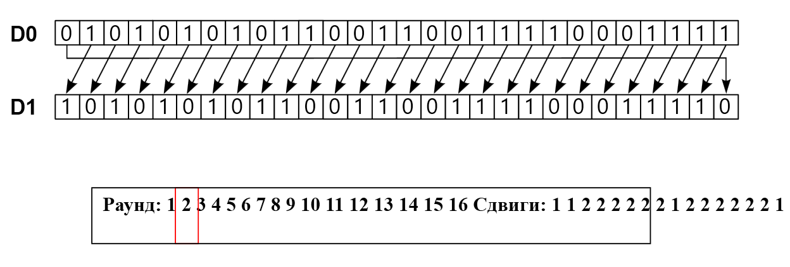
Бұл, мысалы, C3 және D3, мұнда C2 және D2, атап айтқанда, 2 солға жылжу; C16 және D16 Бұл C15 және D15-тен 1 солға ауысымда алынған. Барлық жағдайларда солға жылжу барлық биттерді бір бит солға жылжыту керек, осылайша разрядтан кейінгі разрядтың орны 2, 3,…, 28, 1 болады.
Мысалы, бастапқы C0 және D0 ішкі кілттері үшін және біз мынаны аламыз:
Енді біз Kn（ 1<=n<=16）A n-ші айналым үшін жаңа кілт аламыз. Атап айтқанда, CnDn еншілес кілттерінің әрбір жұбы үшін PC-2 кестесіне сәйкес түрлендіруді орындаңыз:
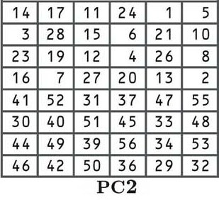
Әрбір еншілес r3knnth жұбында 56 бит бар, бірақ PC-2 олардың тек 48-ін ғана пайдаланады.
Сонымен, n-ші раундтың жаңа кілті Kn#1. 48-ші жаңа кілттің біріктірілген кілттен 32-ші екенін біле отырып, Cn Dn комбинаторлық кілтімен 14-ші, 17-ден 2-ші, т.б.
Мысалы, бірінші айналымның біріктірілген кілті үшін бізде:
C1D1 = 1110000 1100110 0101010 1011111 1010101 0110011 0011110 0011110 PC-2 түрлендіруден кейін біз мыналарды аламыз:
K1 = 000110 110000 001011 101111 111111 000111 000001 110010 Басқа кілттер үшін де:
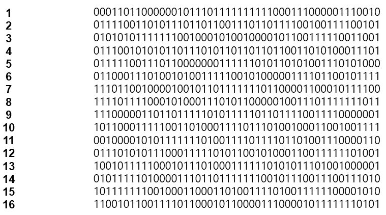
2-қадам: Әрбір 64-биттік деректер блогын шифрлау
Шифрланбаған М деректері үшін бастапқы түрлендіру IP (Initial permutation) есептейміз. IP әрбір М деректер битін қайта түрлендіру арқылы жасалады.Гнерациялау процесі келесі кестемен анықталады. Кестенің индексі жаңа деректердің индексіне сәйкес келеді. Кестедегі x мәні жаңа деректердің ескі деректердің x-ші битінен келетінін көрсетеді.
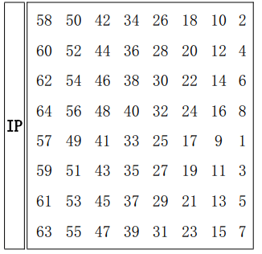
Жоғарыдағы кестеге сілтеме жасай отырып, М-ның 58-ші орны IP-нің бірінші орнына, M-ның 50-ші орны IP-нің екінші орнына, ал M-ның 7-ші орны IP-нің соңғы орнына айналады.
Мысалы, M блогында бастапқы түрлендіруді орындай отырып, біз мынаны аламыз:
Мұнда M-ның 58-ші биті 1-ге тең, ол IP-нің бірінші биті болады. M-нің 50-ші биті 1-ге тең, ол IP-нің екінші биті болады. M жетінші биті 0, ол IP соңғы биті болады.
Келесі қадам - IP мекенжайын 32 биттік сол жақ жартыға түрлендіру L032 биттік оң жақ жарты R0。.
Содан кейін біз 16 итерация жасаймыз.1<=n<=16f функциясын қолданыңыз. f функциясы екі блокты алады: 32-биттік деректер блогы және 48-биттік кілттік блок Kn - 32-биттік блоктың шығысы. + анықтамасы XOR дегенді білдіреді. Сонымен 1-ден 16-ға дейін n циклін жасайық, біз есептейміз
Ln = Rn-1
Rn = Ln-1 + f(Rn-1,Kn)
Сонымен, біз n= 16L16R16 болатын соңғы блокты аламыз.Бұл процесс қарапайым, біз алдыңғы итерация нәтижесінің оң жақ 32 битін ағымдағы итерацияның сол жақ 32 биті ретінде аламыз. Ағымдағы итерацияның оң жақ 32 биті үшін XOR мұны алдыңғы итерацияның f функциясының шығысымен белгілеңіз.
Қалғаны f функциясы қалай жұмыс істейді. f есептеу үшін алдымен әрбір Rn-1-ді 32-биттен 48-битке дейін кеңейтеміз. Бұл Rn-1 кестесінің көмегімен қайталанады.Кейбір биттер жүзеге асырылады. Біз бұл процесс функциясын E деп атаймыз. Бұл функция E(Rn-1) 32 биттік кіріс және 48 биттік шығыс.
E функциясының шығысы ретінде E-ді анықтаңыз және оны әрқайсысы 6 биттен тұратын 8 топқа жазыңыз. Бұл биттер белгілі бір кіріс биттерін таңдау арқылы жасалады және нақты таңдау реті келесідей жүзеге асырылады:
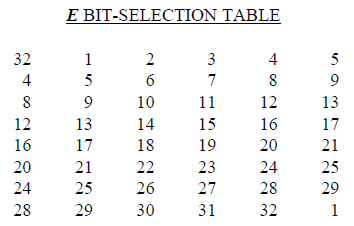
Басқаша айтқанда, E(Rn-1) Rn-1 32-ші, 1-ші және 2-ші орындардан алғашқы үш бит E(Rn-12 соңындағы бит Rn-1 32-ші және 1-ші орындардан алынған.
Бұл кезде біз f функциясының есебін аяқтаған жоқпыз, біз жай ғана Rn-1 Expanded 32 биттен 48 битке дейін кестені қолданамыз және нәтиже мен кілт Kn XOR операциясы орындалды. Бізде қазір 48 биттік нәтижелер немесе 6 биттік деректердің 8 жинағы бар. Енді біз әр топтың 6 битіне оғаш амалдарды орындағымыз келеді: біз оны «S-box» деп аталатын кестенің адресі ретінде қолданамыз. Әрбір 6 бит жиынтығы бізге жеке S-қораптағы мекенжай береді. Бұл мекенжай 4 биттік нөмірді сақтайды. Бұл 4 биттік сан бастапқы 6 битті ауыстырады. Соңғы нәтиже 6-биттік деректердің 8 жиыны 4-биттік (барлығы 32 бит) деректердің 8 жиынына түрлендіріледі.
Алдыңғы қадамның 48-биттік нәтижесін келесідей жазыңыз:
Kn + E(Rn-1) = B1B2B3B4B5B6B7B8,
Әрбір B - 6 биттік пакет, енді біз санаймыз
S1(B1)S2(B2)S3(B3)S4(B4)S5(B5)S6(B6)S7(B7)S8(B8)
Олардың ішінде Si(Bi) i-ші блоктың S шығысына жатады.
Әрбір SS1, S2,…, S8 функциясын есептеу үшін кіріс және шығыс 4-биттік блок ретінде 6-биттік блокты алыңыз. шешу S1 пішіні келесідей көрінеді:
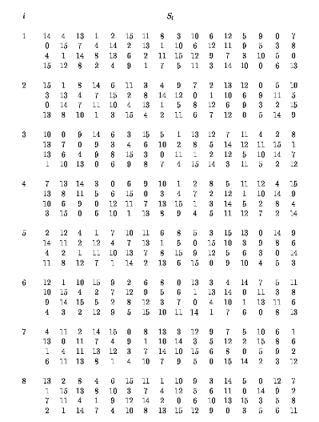
Егер S1 осы кестеде анықталған функция болса, В 6 разрядты блок болса, онда S1(B) әдісінің есебі келесідей болады: B бірінші және соңғы цифрларымен біріктірілген екілік сан 0-ден ондық санды анықтайды 3 (немесе 00-ден 11-ге дейінгі екілік сан). Бұл нөмір мен болсын. Орташа 4 таңбалы екілік В саны 0-ден 15-ке дейінгі ондық сан (0000-нан 1111-ге дейінгі екілік). Бұл сан j болсын. i жолындағы және j бағанындағы санды табу үшін кестені қарап шығыңыз, ол 0 мен 15 арасындағы сан және ол бір 4 биттік блокпен ұсынылуы мүмкін. Бұл блок S1 функциясы болып табылады BS1(B) кірісінен шығу, Мысалы, В кірісі үшін = 011011 Бірінші сан 0, ал соңғы цифр 1, ол жолдың нөмірі 01, ол ондық жүйеде 1 болатынын көрсетеді. Ортаңғы 4 цифры 1101, бұл ондық бөлшекте 13 дегенді білдіреді, сондықтан баған нөмірі 13. Кестенің бірінші жолы мен 13-бағанына қарап, біз 5 санын аламыз. Бұл шығысты анықтайды, 5 екілік 0101, сондықтан шығыс 0101. Сонда S1(011011) = 0101.
Мысал: Бірінші айналымда біз осы 8 S-блоктың нәтижесін аламыз:
Содан кейін соңғы түрлендіруді орындаңыз IP-1 Оның анықтамасы келесі кестеде көрсетілген:
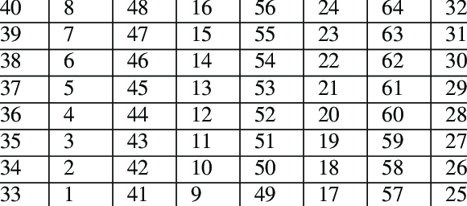
Яғни, бұл түрлендірудің бірінші шығыс биті 40-шы кіріс биті, ал екінші бит 8-ші кіріс биті болып табылады, 25-ші кіріс биті соңғы шығыс биті ретінде пайдаланылғанша.
Мысалы, 16-шы айналымның сол және оң екі блогын алу үшін жоғарыдағы әдісті қолдансақ:
Біз екі блокты өзгертеміз, содан кейін соңғы түрлендіруді жасаймыз: R16L16 = 00001010 01001100 11011001 10010101 01000011 01000010 00110010 00110100 IP-1 = 10000101 11101000 00010011 01010100 00001111 00001010 10110100 00000101
Алу үшін он алтылық жүйеде жазылады: 85E813540F0AB405
Бұл ашық мәтін M = 0123456789ABCDEF шифрланған C = 85E813540F0AB405.
Шифрды шешу – шифрлаудың кері процесі. Жоғарыда көрсетілген қадамдар орындалады, бірақ 16 итерацияда сол және оң жақ бөлімшелердің орындары ауыстырылады.
Хэш функциясы бастапқы ақпараттан бірегей цифрлық саусақ ізін жасайтыны белгілі. Нәтижедегі ақпаратты хэштеу хэш сомасы немесе жай хэштер деп аталады.
Бұл қалай жұмыс істейді? Хэш функциясы тіркелгіңізден мәтін немесе құпия сөз сияқты белгілі бір ақпаратты алады, ол тіпті бөлек файл болуы мүмкін және бұл ақпаратты белгілі бір ұзындықтағы жолға түрлендіреді. Енгізілген өлшем қандай болса да, бұл жол әрқашан бірдей ұзындықта болады. Көптеген әртүрлі хэш алгоритмдері бар. Мысалы, sha-256 хэш алгоритмі арқылы өткен биткоин сөзі келесідей болады.
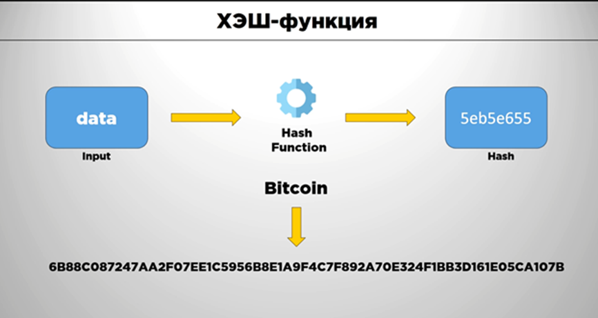
Хэш функциялары кәдімгі шифрлаудан өте ерекшеленеді. AES алгоритмі арқылы кез келген ақпаратты шифрлау, сіз әрқашан құпия кілтті пайдаланып оның шифрын ашуға болады. Хэш функциялары тек бір жолмен жұмыс істейді. Кейбір ақпаратты хэш-функция арқылы, мысалы, сіздің пароліңізді өткізіп, хэш мәнін біле отырып, ақпараттың бастапқы мәнін ала алмайсыз. Бұл хэш функцияларына қойылатын талаптардың бірі. Хэш функциясы бір жақты болуы керек. Кейінірек бұл не үшін қажет екендігінің мысалын талдаймыз.
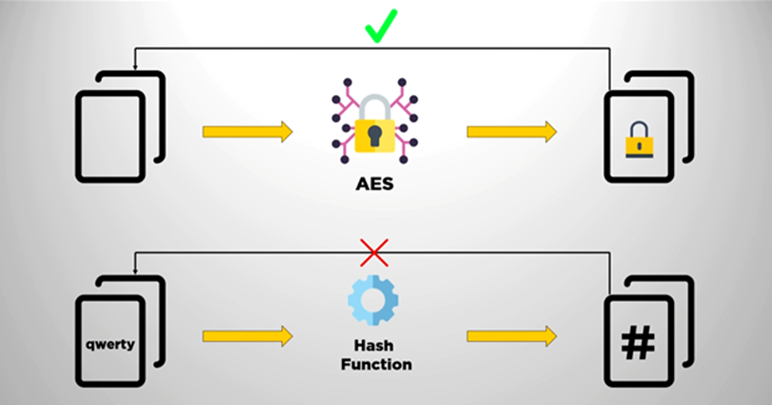
Хэш-функцияларға қойылатын екінші негізгі талап - алынған хэш өлшемі кіріс ақпаратына қарамастан бекітілуі. Енді сізде бірнеше бастапқы деректер мен хэштері бар кесте бар.
Тіркелген хэш өлшемі
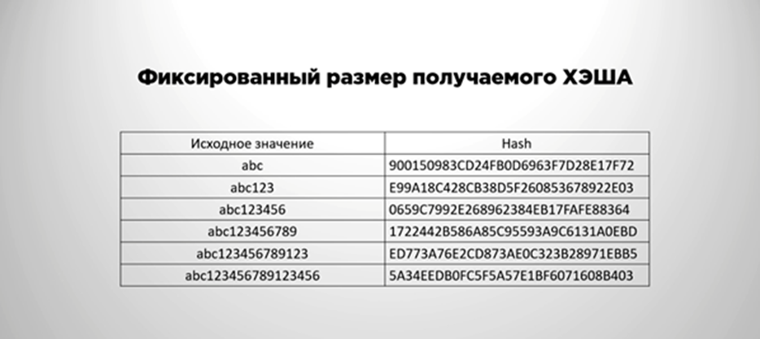
Көріп отырғаныңыздай, бастапқы ақпараттың ұзындығы әртүрлі, бірақ хэштің ұзындығы бірдей. Қалай болғанда да, хэш функциясына қойылатын келесі талап - бұл алынған кэштің бірегейлігі және соқтығыстардың толық дерлік болмауы. Бұл нені білдіреді? Бұл екі түрлі ақпарат жинағы бірдей хэш мәнін шығара алмайтынын білдіреді.
Идеал криптографиялық хэш функциясы қандай болады? Идеал криптографиялық хэш функциясы келесі бес қасиеті бар функция болып табылады:
1-Детерминистикалық - бірдей кіріс әрқашан бірдей хэш мәнін шығарады. 2-Кез келген хабарламадан хэш функцияларын жоғары жылдамдықпен есептеу. 3-Бір бағытты – оның хэшін біле тұра бастапқы хабарламаны алу мүмкін емес, тек қана күш қолдану әрекеттерін қоспағанда. 4-Көшкін әсерінің болуы – бастапқы хабарламадағы ең аз өзгеріс хэштің түбегейлі өзгеруіне әкеледі. 5-Екі түрлі хабар үшін бірдей хэш мәнін табу мүмкін емес.
Сіз хэш функцияларын пайдаланудың қарапайым мысалын қарастырайық
Мысалы, Вконтакте немесе басқа әлеуметтік желіде тіркеліңіз. Сіздің пайдаланушы атыңыз бен құпия сөзіңіз белгілі бір хэш функциясы арқылы өтеді және хэш мәндері дерекқорға жазылады. Тіркелгеннен кейін жүйеге кіру үшін логин мен парольді пайдаланған кезде, олар қайтадан хэш функциясы арқылы өтеді және хэш мәні дерекқорға жазылған хэш мәнімен салыстырылады.
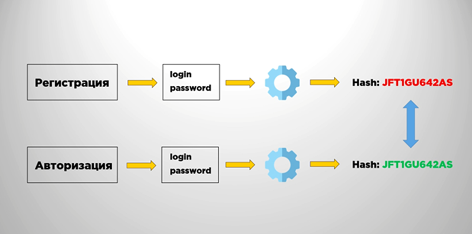
Бастапқыда, тіркелгеннен кейін мәндер сәйкес келсе, жүйе сізге рұқсат береді. Хэш мәні сәйкес келмесе, логин немесе құпия сөз дұрыс емес екендігі туралы хабарландыру шығады. Бұл жерде хэш-функцияның негізгі талабына – бір бағыттылыққа ораламыз. Кейбір әлеуметтік желінің дерекқорын бұзған ықтимал шабуылдаушылар хэш мәндерін алады, бірақ таза логиндер мен парольдерді емес. Дәл хэш функциясы бір жақты болғандықтан, одан пайдаланушының құпия сөзі мен логин сияқты бастапқы деректерді алу мүмкін емес.
Дегенмен, хэштерді алған шабуылдаушы кейбір пайдаланушылардың құпия сөзін әлі де таба алады. Мұны істеу үшін «кемпірқосақ» кестелеріне шабуылды пайдаланыңыз.
Шабуылдаушылар қарапайым және жиі қолданылатын құпия сөздер үшін алдын ала есептелген хэштерді пайдаланады және кестедегі хэштерді әлеуметтік желі дерекқорынан алынған хэштермен салыстырады. Бірақ мұнда бір мәселе туындайды: егер кейбір пайдаланушылар бірдей құпия сөзді орнатса, соңғы пароль хэші де бірдей болады. Кез келген адамның бірдей құпия сөзді қолдануы екіталай деп айтуға болады. Дегенмен, мұнда пайдаланушылар әлеуметтік желілерде және басқа қызметтерде қолданатын 2020 жылға арналған ең танымал құпия сөздердің кестелері берілген.
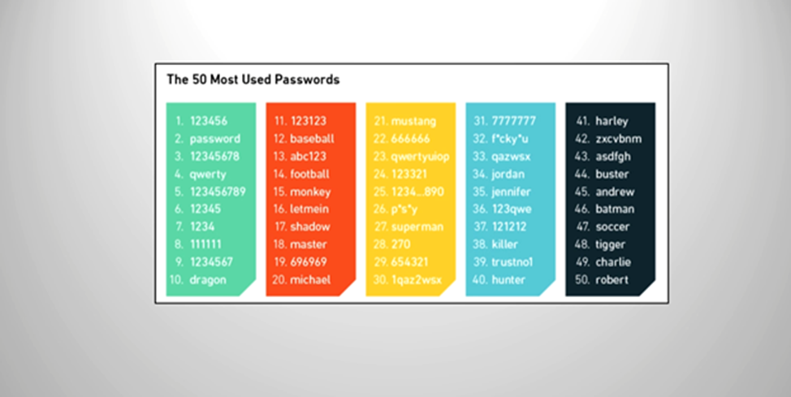
Бірнеше пайдаланушы бір құпия сөзді пайдаланған кезде бірдей хэшке қатысты мәселелерді болдырмау үшін «salt» қолданылады.
«Salt(Тұз)» дегеніміз не? «Salt» - парольмен бірге хэш функциялары арқылы өтетін деректер жолы.
Хэштеу кезінде salt-ты пайдалану құпия сөздер бірдей болса да, хэш мәні әртүрлі болатынына кепілдік береді. Алиса мен Боб бірдей qwerty құпия сөзін қолданса дейік. Бұл құпия сөздердің хэштері «salt» қолданылғанына байланысты күрт басқаша болады.
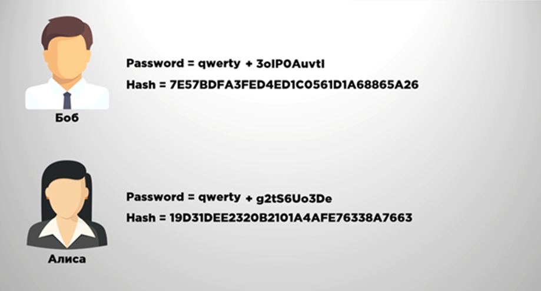
Хэш функциялары блокчейнде де қолданылады, биткоин блокчейніндегі әрбір транзакцияда алушы мен жіберуші туралы ақпарат бар. Транзакциялар сомасы туралы, оның жіберілген уақыты және т.б. Бұл ақпараттың барлығы хэштелген және «транзакция идентификаторы» қалыптасады. «Транзакция идентификаторы» - оны анықтау және осы транзакцияның орындалғанын тексеру үшін пайдаланылатын хэш сомасы. Хэштер блокчейндегі блоктарда да қолданылады. Блокчейннің әрбір блогы, биткоин өзінің хэшін және байланысты тізбекті құрайтын алдыңғы блоктың хэшін қамтиды.
Осы материалды оқығаннан кейін сіз хэш функциясының не екенін, хэштеу алгоритмінің қалай жұмыс істейтінін және оны қалай пайдалануға болатынын білесіз деп үміттенеміз.
Ағынды шифрлар.Кешігуі бар Фабоначчи әдісі
Ағынды шифрлар
Блокты алгоритм белгілі бір ұзындығы бар блоктарды
шифрлауға арналған.
Бірақ,деректердіблоктарменемес,мысалы,символдарбойыншашифрлаудыңқажетіболумүмкін.
Ағынды шифр (stream cipher) кіру
хабардың биттерін (немесе байттарын) бір-бірдентүрлендіріпбіроперацияныорындайды.Ағындышифрлау
алгоритмыхабардыбүтін сандар блоктарға бөлуді қажет етпейді, сондықтан ол нақты
уақытта істей алады.Сонымен,егерсимволдарағыныберілсе,
әрбірсимволшифрланыпбірденберіледі.
Типтіағындышифрдыңжұмысы 10.1суреттекөрсетілген.
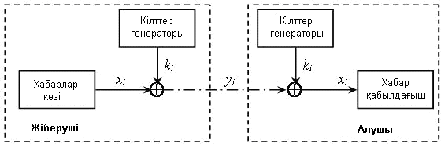
Кілттер генераторы биттер ағының ki шығарады, олар гамма ретінде пайдаланатын болады.
Хабар көзі ашық мәтіннің хi
биттерін генерациялайды, олар гаммамен модулі 2 бойынша қосылады,
нәтижесінде шифрланған хабардың уi
биттері алынады:
yi=xi * ki, i =1,
2,…,n
Шифр мәтіннен y1, y2,..., yn хабарды x1, x2,..., xn
қалпына келтіру үшін тура шифрлау кезіндегідей кілттіктізбекті k1 генерациялау қажет yk,..., kn, және ашып оқу үшін xi=yiki, i =1,
2,…,n
формуланы пайдалану керек.
Әдетте бастапқы хабар мен кілттік
тізбегі тәуелсіз бит ағыны болып табылады.Сонымен, барлық ағынды шифрлар үшін
шифрлайтын (және дешифрлайтын) түрлендіруі бірдей болғандықтан,
олар тек кілттер генераторын жасау тәсілдері мен ажыратылады.Осыдан, жүйенің
қауіпсіздігі кілттер ағын генератордың қасиетіне толық тәуелді болады.Егер
кілттер ағын генераторы тек нөлден (немесе бірден) тұратын тізбекті жасап
шығарса,онда шифрланған хабар тура бастапқы биттер ағыны сияқты болады. Егер
гамма ретінде бір символ(мысалы,сегізбитты)пайдаланса,онда шифрланған хабар бастапқыға
ұқсамасада,жүйенің қауіпсіздігі нашар болады.Бұл жағдайда мәтін ұзындығы бойынша
кілт кодын көп рет қайталағанда, оны статистикалық әдістер арқылы ашуға болады.
Мұны қарапайым мысал көмегімен түсіндірейік-цифрлық мәтін кілттін қысқа цифрлық кодымен гаммалау әдісарқылы
жабылған.